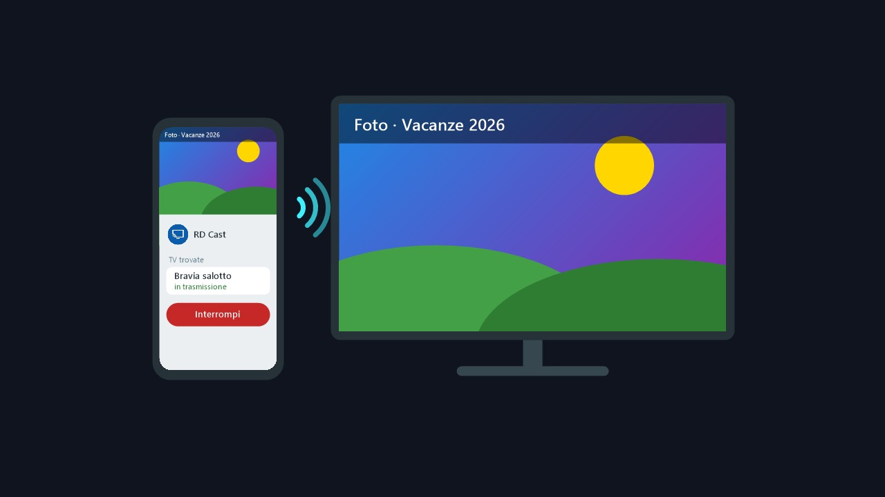

RD CAST

TELEFONO: RD CASTtrasmette · Android 10 o più recente · .apk TV: RD CAST TVriceve · Android TV / Google TV 8.0 o più recente · .apkA cosa serve
Mostra sulla TV tutto quello che c'è sullo schermo del telefono: foto, video, app, giochi, una presentazione. Il telefono può stare in verticale o in orizzontale: la TV si adatta da sola. Arriva anche l'audio delle app.
Funziona in casa, sulla tua rete: telefono e TV devono essere collegati alla stessa rete (la TV può essere via cavo e il telefono in Wi-Fi). Non passa niente da Internet.
Come si installa sul telefono
- Scarica RDCast.apk direttamente sul telefono e aprilo.
- La prima volta Android chiede di consentire l'installazione di app da quella fonte (il browser o il gestore dei file): Impostazioni → Consenti da questa fonte, poi torna indietro e tocca Installa.
- Play Protect può avvisare che non conosce l'app: Installa comunque. Succede a tutte le app che non arrivano dal Play Store.
Come si installa sulla TV
Serve una TV con Android TV o Google TV (per esempio le Sony Bravia). Il modo più semplice:
- Sulla TV, dal Play Store, installa l'app Downloader (quella con l'icona arancione).
- Aprila e scrivi l'indirizzo
dave1971.github.io/rd-cast/RDCast-TV.apk, poi Go. - Alla fine del download la TV chiede di consentire le app da Downloader: consenti, torna indietro e scegli Installa.
Se la TV non mostra la voce per consentire le app di origine sconosciuta, va prima attivata la modalità sviluppatore: Impostazioni → Sistema → Informazioni, poi premi 7 volte su Build del sistema operativo Android TV. Dopo la trovi in Impostazioni → App → Sicurezza e limitazioni → Origini sconosciute. I nomi delle voci possono cambiare un po' da un modello all'altro.
In alternativa puoi copiare RDCast-TV.apk su una chiavetta USB e aprirlo sulla TV con un gestore di file.
Come si usa
- Sulla TV apri RD Cast TV: compare "Pronta a ricevere", con il nome e l'indirizzo della TV.
- Sul telefono apri RD Cast: la TV compare da sola nell'elenco. Se non compare, scrivi l'indirizzo che vedi sulla TV.
- Tocca la TV e conferma la richiesta di Android di trasmettere lo schermo. Dopo un attimo lo schermo del telefono è sulla TV.
- Per smettere tocca Interrompi nell'app o nella notifica, oppure premi Indietro sul telecomando.
Puoi scegliere la qualità: 720p, 1080p (quella di partenza) o massima. Se la rete rallenta l'immagine salta qualche fotogramma ma non accumula ritardo.
Da sapere
- Netflix e le altre app con contenuti protetti appaiono nere sulla TV, e alcune app di streaming restano senza audio: è una regola di Android, non si può aggirare. Per quelle usa l'app sulla TV.
- Una sola trasmissione alla volta: se un secondo telefono si collega, prende il posto del primo.
- Se il telefono non trova la TV, controlla che siano sulla stessa rete. Alcune reti Wi-Fi per gli ospiti isolano i dispositivi fra loro.